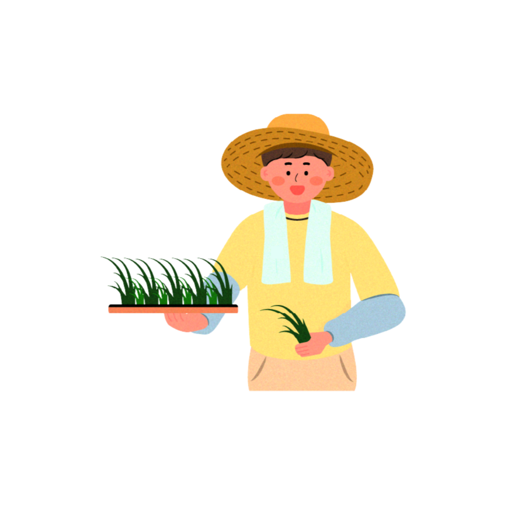
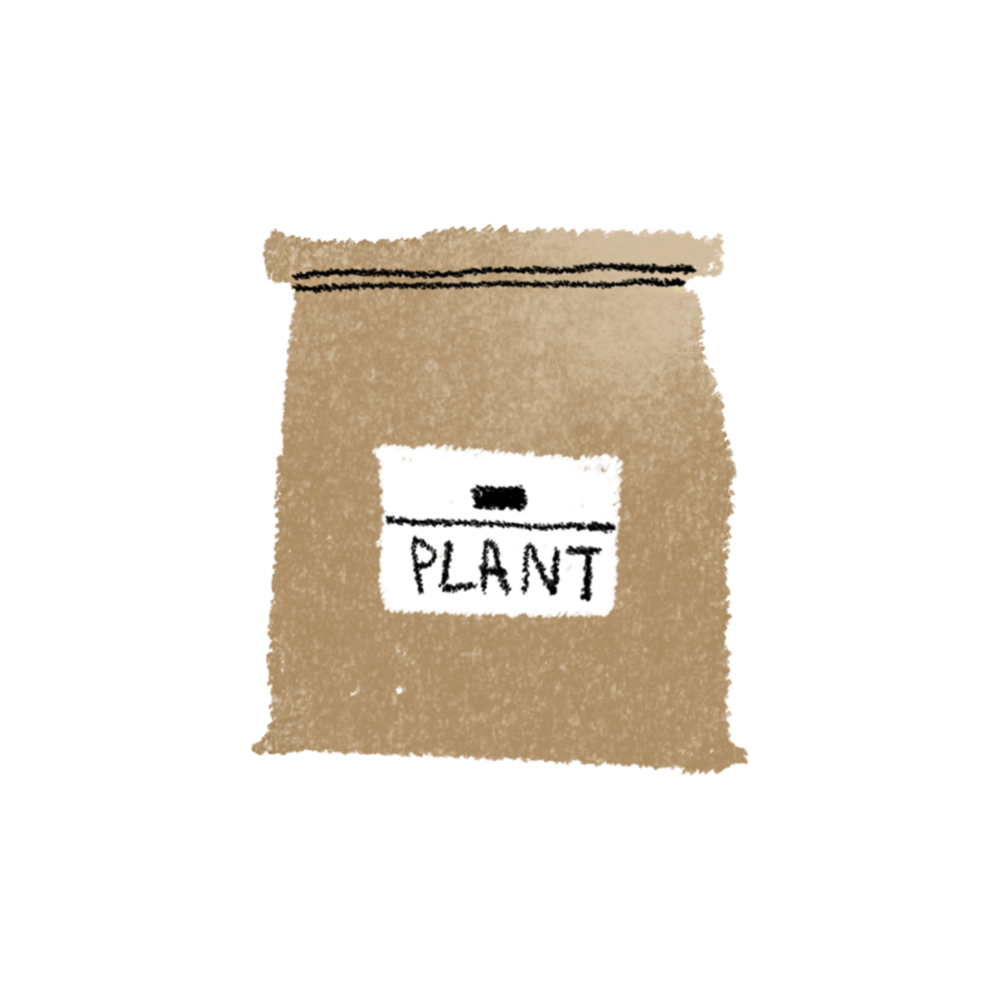
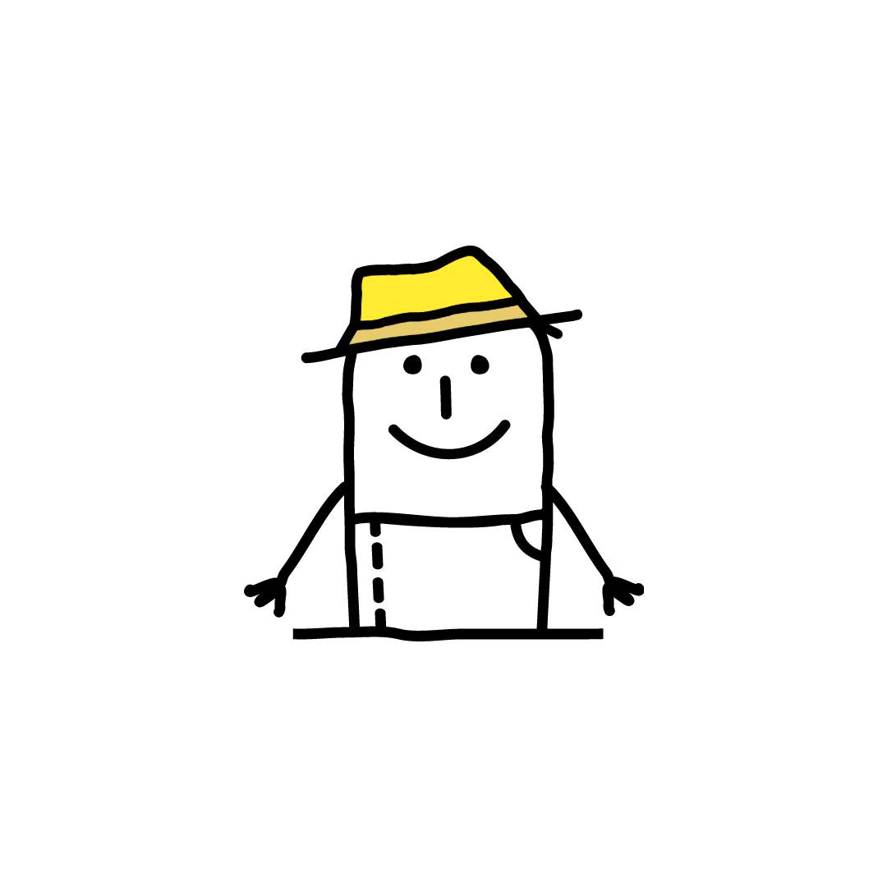

@ingsoon
농사·텃밭·가드닝
지식정보채널 파밍순
8,000명이 구독하는 농사정보채널입니다.
우리 농장은 >
농사,텃밭,식물생활에 대해 알려주는 채널 파밍순과
농자재·식물생활백화점 파밍순마켓을 운영하고 있어요.
농자재·식물생활백화점 파밍순마켓을 운영하고 있어요.
주로 키워요 >

농사·가드닝정보

농자재·농기구

농업서비스
바로 주문하세요 >
 분갈이하기 딱
좋은 날씨! 파밍순마켓 분갈이특별전
분갈이하기 딱
좋은 날씨! 파밍순마켓 분갈이특별전파밍순의 어떤농장 제작